Amazing Spider-Man Vol 2 (1998 - 2013)
| Comic Book | Release Date | Cover |
|---|---|---|
| Amazing Spider-Man Vol 2 #1 Where R U Spider-Man??? |  | |
| Amazing Spider-Man Vol 2 #2 I can't...(and I don't want to)...but I must! | 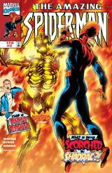 | |
| Amazing Spider-Man Vol 2 #3 Off To A Flying Start! | 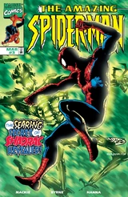 | |
| Amazing Spider-Man Vol 2 #4 Betrayals | 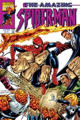 | |
| Amazing Spider-Man Vol 2 #5 ...And Then There Was One! | 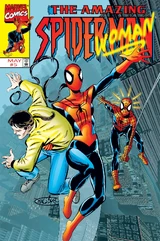 | |
| Amazing Spider-Man Vol 2 #6 Truth be told (...or not) | 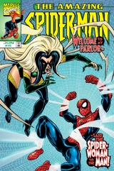 | |
| Amazing Spider-Man Vol 2 #7 The Perfect World Part 1: Heroes & Villains | 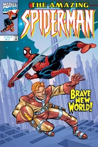 | |
| Amazing Spider-Man Vol 2 #8 The Perfect World Part 2: The Man Behind the Curtain! | 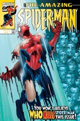 | |
| Amazing Spider-Man Vol 2 #9 The List | 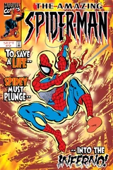 | |
| Amazing Spider-Man Vol 2 #10 And then there were... | 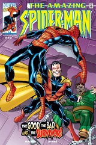 | |
| Amazing Spider-Man Vol 2 #11 Bright Lights... Bigger City | 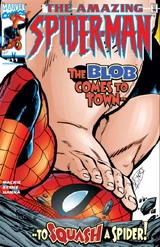 | |
| Amazing Spider-Man Vol 2 #12 Another Return of the Sinister Six: Part 1 of 2 | 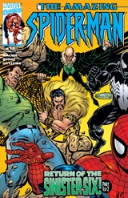 | |
| Amazing Spider-Man Vol 2 #13 Time Enough...? | 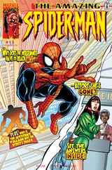 | |
| Amazing Spider-Man Vol 2 #14 A Surfeit of Spiders | 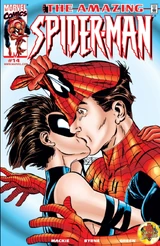 | |
| Amazing Spider-Man Vol 2 #15 We're All Doomed… Again! | 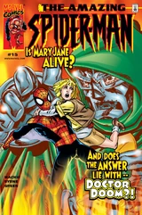 | |
| Amazing Spider-Man Vol 2 #16 Coming Home | 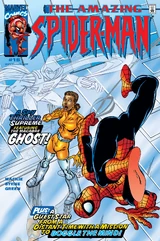 | |
| Amazing Spider-Man Vol 2 #17 Dust in the wind | 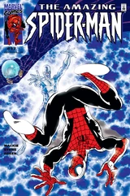 | |
| Amazing Spider-Man Vol 2 #18 Homeward Bound | 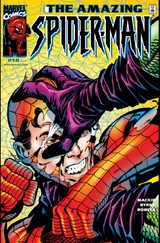 | |
| Amazing Spider-Man Vol 2 #19 Mirror Mirror | 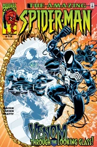 | |
| Amazing Spider-Man Vol 2 #20 Setup! | 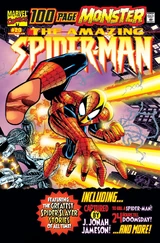 | |
| Amazing Spider-Man Vol 2 #21 Slayers to the left of me... | 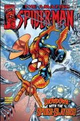 | |
| Amazing Spider-Man Vol 2 #22 The Distinguished Gentleman From New York: Part 1 of 3 | 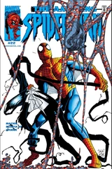 | |
| Amazing Spider-Man Vol 2 #23 Part 2 of 3: How many times? | 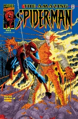 | |
| Amazing Spider-Man Vol 2 #24 Conclusion: Failure is not an option | 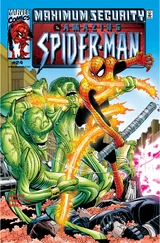 | |
| Amazing Spider-Man Vol 2 #25 Darkness Calling | 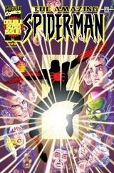 | |
| Amazing Spider-Man Vol 2 #26 The Mask | 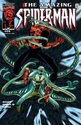 | |
| Amazing Spider-Man Vol 2 #27 The Stray | 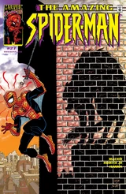 | |
| Amazing Spider-Man Vol 2 #28 Distractions | 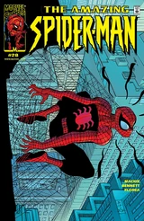 | |
| Amazing Spider-Man Vol 2 #29 Mary Jane | ||
| Amazing Spider-Man Vol 2 #30 Transformations, Literal & Otherwise | 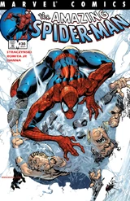 | |
| Amazing Spider-Man Vol 2 #31 Coming Home | 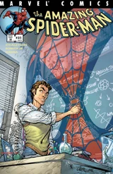 | |
| Amazing Spider-Man Vol 2 #32 The Long, Dark Pizza of the Soul | 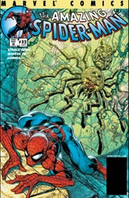 | |
| Amazing Spider-Man Vol 2 #33 All Fall Down | 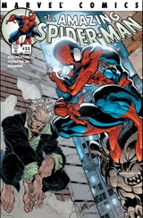 | |
| Amazing Spider-Man Vol 2 #34 Meltdown | 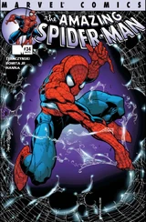 | |
| Amazing Spider-Man Vol 2 #35 Coming Out | 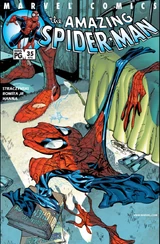 | |
| Amazing Spider-Man Vol 2 #36 Stand Tall | ||
| Amazing Spider-Man Vol 2 #37 Interlude | 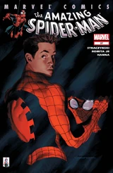 | |
| Amazing Spider-Man Vol 2 #38 The Conversation | 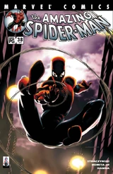 | |
| Amazing Spider-Man Vol 2 #39 Meanwhile... | 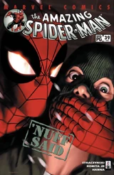 | |
| Amazing Spider-Man Vol 2 #40 Sensitive Issues | 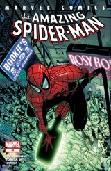 | |
| Amazing Spider-Man Vol 2 #41 Looking Back | 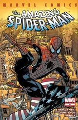 | |
| Amazing Spider-Man Vol 2 #42 A Strange Turn of Events | 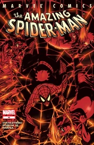 | |
| Amazing Spider-Man Vol 2 #43 Gold Arms | 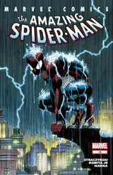 | |
| Amazing Spider-Man Vol 2 #44 Arms and the Men | 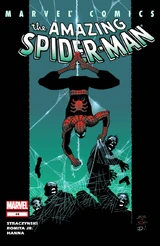 | |
| Amazing Spider-Man Vol 2 #45 Until the Stars Turn Cold | 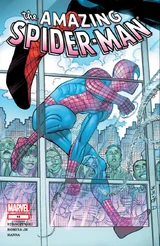 | |
| Amazing Spider-Man Vol 2 #46 Unnatural Enemies | 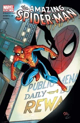 | |
| Amazing Spider-Man Vol 2 #47 The Life and Death of Spiders | 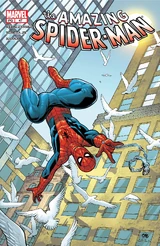 | |
| Amazing Spider-Man Vol 2 #48 A Spider's Tale | 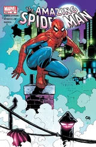 | |
| Amazing Spider-Man Vol 2 #49 Bad Connections | 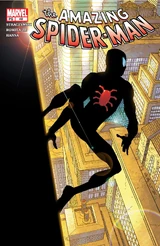 | |
| Amazing Spider-Man Vol 2 #50 Doomed Affairs | 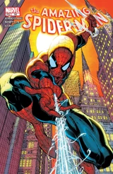 | |
| Amazing Spider-Man Vol 2 #51 Digger | 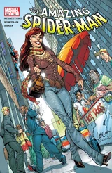 | |
| Amazing Spider-Man Vol 2 #52 Dig This | 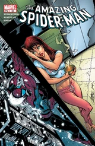 | |
| Amazing Spider-Man Vol 2 #53 Parts and Pieces | 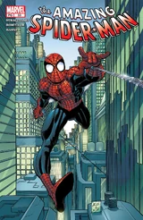 | |
| Amazing Spider-Man Vol 2 #54 The Balancing of Karmic Accounts | ||
| Amazing Spider-Man Vol 2 #55 Unintended Consequences | ||
| Amazing Spider-Man Vol 2 #56 The Revolution Within | ||
| Amazing Spider-Man Vol 2 #57 Happy Birthday: Part 1 of 3 | ||
| Amazing Spider-Man Vol 2 #58 Happy Birthday: Part 2 of 3 | ||
| Amazing Spider-Man Vol 2 #500 Happy Birthday, Part Three | ||
| Amazing Spider-Man Vol 2 #501 Saturday in the Park with May | ||
| Amazing Spider-Man Vol 2 #502 You Want Pants With That? | ||
| Amazing Spider-Man Vol 2 #503 Chasing A Dark Shadow (Part 1 of 2) | ||
| Amazing Spider-Man Vol 2 #504 Chasing A Dark Shadow (Part 2 of 2) | ||
| Amazing Spider-Man Vol 2 #505 Vibes | ||
| Amazing Spider-Man Vol 2 #506 The Book of Ezekiel: Chapter One | ||
| Amazing Spider-Man Vol 2 #507 The Book of Ezekiel: Chapter Two | ||
| Amazing Spider-Man Vol 2 #508 The Book of Ezekiel: Chapter Three | ||
| Amazing Spider-Man Vol 2 #509 Sins Past - Part One | ||
| Amazing Spider-Man Vol 2 #510 Sins Past - Part Two | ||
| Amazing Spider-Man Vol 2 #511 Sins Past - Part Three | ||
| Amazing Spider-Man Vol 2 #512 Sins Past - Part Four | ||
| Amazing Spider-Man Vol 2 #513 Sins Past - Part Five | ||
| Amazing Spider-Man Vol 2 #514 Sins Past - Part Six | ||
| Amazing Spider-Man Vol 2 #515 Skin Deep | ||
| Amazing Spider-Man Vol 2 #516 Skin Deep, Part Two | ||
| Amazing Spider-Man Vol 2 #517 Skin Deep, Part Three | ||
| Amazing Spider-Man Vol 2 #518 Skin Deep, Part Four | ||
| Amazing Spider-Man Vol 2 #519 Moving Up | ||
| Amazing Spider-Man Vol 2 #520 Acts of Aggression | ||
| Amazing Spider-Man Vol 2 #521 Unintended Consequences | ||
| Amazing Spider-Man Vol 2 #522 Moving Targets | ||
| Amazing Spider-Man Vol 2 #523 Extreme Measures | ||
| Amazing Spider-Man Vol 2 #524 All Fall Down | ||
| Amazing Spider-Man Vol 2 #525 Rage | ||
| Amazing Spider-Man Vol 2 #526 Reckoning | ||
| Amazing Spider-Man Vol 2 #527 Evolution | ||
| Amazing Spider-Man Vol 2 #528 Post Mortem | ||
| Amazing Spider-Man Vol 2 #529 Mr. Parker Goes to Washington: Part One of Three | ||
| Amazing Spider-Man Vol 2 #530 Mr. Parker Goes to Washington: Part Two of Three | ||
| Amazing Spider-Man Vol 2 #531 Mr. Parker Goes to Washington: Part Three of Three | ||
| Amazing Spider-Man Vol 2 #532 The War at Home: Part One of Six | ||
| Amazing Spider-Man Vol 2 #533 The Night the War Came Home: Part Two of Six | ||
| Amazing Spider-Man Vol 2 #534 The War at Home: Part Three of Six | ||
| Amazing Spider-Man Vol 2 #535 The War at Home: Part Four of Six | ||
| Amazing Spider-Man Vol 2 #536 The War at Home: Part 5 of 6 | ||
| Amazing Spider-Man Vol 2 #537 The War at Home: Part 6 of 7 | ||
| Amazing Spider-Man Vol 2 #538 The War at Home: Part 7 of 7 | ||
| Amazing Spider-Man Vol 2 #539 Back in Black: Part 1 of 5 | ||
| Amazing Spider-Man Vol 2 #540 Back in Black: Part 2 of 5 | ||
| Amazing Spider-Man Vol 2 #541 Back in Black: Part 3 of 5 | ||
| Amazing Spider-Man Vol 2 #542 Back in Black: Part 4 of 5 | ||
| Amazing Spider-Man Vol 2 #543 Back in Black: Part 5 of 5 - An Incident on the Fourth Floor | ||
| Amazing Spider-Man Vol 2 #544 Spider-Man: One More Day, Part 1 | ||
| Amazing Spider-Man Vol 2 #545 Spider-Man: One More Day, Part 4 | ||
| Amazing Spider-Man Vol 2 #546 Brand New Day | ||
| Amazing Spider-Man Vol 2 #547 Crimes of the Heart | ||
| Amazing Spider-Man Vol 2 #548 Blood Ties | ||
| Amazing Spider-Man Vol 2 #549 Who's that Girl?!? | ||
| Amazing Spider-Man Vol 2 #550 The Menace of... Menace!! | ||
| Amazing Spider-Man Vol 2 #551 Lo, There Shall Come a Menace!! | ||
| Amazing Spider-Man Vol 2 #552 Just blame Spider-Man | ||
| Amazing Spider-Man Vol 2 #553 Freak-Out! | ||
| Amazing Spider-Man Vol 2 #554 Burned! | ||
| Amazing Spider-Man Vol 2 #555 Sometimes It Snows in April | ||
| Amazing Spider-Man Vol 2 #556 The Last Nameless Day | ||
| Amazing Spider-Man Vol 2 #557 Dead of Winter | ||
| Amazing Spider-Man Vol 2 #558 Freak the Third | ||
| Amazing Spider-Man Vol 2 #559 Peter Parker, Paparazzi: Part One - The Money Shot | ||
| Amazing Spider-Man Vol 2 #560 Peter Parker, Paparazzi: Part Two - Flat Out Crazy | ||
| Amazing Spider-Man Vol 2 #561 Peter Parker, Paparazzi: Part 3 of 3 - Photo Finished | ||
| Amazing Spider-Man Vol 2 #562 The Other Spider-Man | ||
| Amazing Spider-Man Vol 2 #563 So Spider-Man Walks Into a Bar and... | ||
| Amazing Spider-Man Vol 2 #564 Threeway Collision! | ||
| Amazing Spider-Man Vol 2 #565 Kraven's First Hunt, Part One: To Squash a Spider! | ||
| Amazing Spider-Man Vol 2 #566 Kraven's First Hunt, Part Two: Identity Crisis! | ||
| Amazing Spider-Man Vol 2 #567 Kraven's First Hunt, Part Three: Legacy | ||
| Amazing Spider-Man Vol 2 #568 New Ways to Die, Part One: Back with Vengeance | ||
| Amazing Spider-Man Vol 2 #569 New Ways To Die, Part Two: The Osborn Supremacy | ||
| Amazing Spider-Man Vol 2 #570 New Ways to Die, Part Three: The Killer Cure | ||
| Amazing Spider-Man Vol 2 #571 New Ways to Die, Part Four: Opposites Attack | ||
| Amazing Spider-Man Vol 2 #572 New Ways to Die, Part Five: Easy Targets | ||
| Amazing Spider-Man Vol 2 #573 New Ways to Die, Part Six: Weapons of Self Destruction | ||
| Amazing Spider-Man Vol 2 #574 Flashbacks | ||
| Amazing Spider-Man Vol 2 #575 Family Ties | ||
| Amazing Spider-Man Vol 2 #576 Family Ties, Part 2 | ||
| Amazing Spider-Man Vol 2 #577 Old Huntin' Buddies | ||
| Amazing Spider-Man Vol 2 #578 Unscheduled Stop, Part 1 | ||
| Amazing Spider-Man Vol 2 #579 Unscheduled Stop, Part 2 | ||
| Amazing Spider-Man Vol 2 #580 Fill in the Blank | ||
| Amazing Spider-Man Vol 2 #581 Mind on Fire, Part One: The Trouble with Harry | ||
| Amazing Spider-Man Vol 2 #582 Mind on Fire, Part Two: Burning Questions | ||
| Amazing Spider-Man Vol 2 #583 Platonic | ||
| Amazing Spider-Man Vol 2 #584 Character Assassination, Part 1 | ||
| Amazing Spider-Man Vol 2 #585 Character Assassination, Part 2 | ||
| Amazing Spider-Man Vol 2 #586 Daddy's Little Girl - Character Assassination: Interlude | ||
| Amazing Spider-Man Vol 2 #587 Character Assassination: Part 3 | ||
| Amazing Spider-Man Vol 2 #588 Character Assassination: Conclusion | ||
| Amazing Spider-Man Vol 2 #589 Marked | ||
| Amazing Spider-Man Vol 2 #590 Face Front, Part One: Together Again... for the First Time | ||
| Amazing Spider-Man Vol 2 #591 Face Front, Part 2: 'Nuff Said! | ||
| Amazing Spider-Man Vol 2 #592 24/7 Part 1 | ||
| Amazing Spider-Man Vol 2 #593 24/7 Part Two | ||
| Amazing Spider-Man Vol 2 #594 24/7: Finale | ||
| Amazing Spider-Man Vol 2 #595 American Son: Part 1 | ||
| Amazing Spider-Man Vol 2 #596 American Son, Part 2 | ||
| Amazing Spider-Man Vol 2 #597 American Son: Part 3 | ||
| Amazing Spider-Man Vol 2 #598 American Son: Part 4 | ||
| Amazing Spider-Man Vol 2 #599 American Son: Conclusion | ||
| Amazing Spider-Man Vol 2 #600 Last Legs | ||
| Amazing Spider-Man Vol 2 #601 Red-Headed Stranger: No Place Like Home | ||
| Amazing Spider-Man Vol 2 #602 Red-Headed Stranger: Tenth of September | ||
| Amazing Spider-Man Vol 2 #603 Red-Headed Stranger: Deconstructing Peter | ||
| Amazing Spider-Man Vol 2 #604 Red-Headed Stranger: The Ancient Gallery | ||
| Amazing Spider-Man Vol 2 #605 Red-Headed Stranger: Epilogue, Chapter One - The Girl | ||
| Amazing Spider-Man Vol 2 #606 Long-Term Arrangement | ||
| Amazing Spider-Man Vol 2 #607 Long-Term Arrangement, Part 2 | ||
| Amazing Spider-Man Vol 2 #608 | ||
| Amazing Spider-Man Vol 2 #609 The Pain Of Kaine | ||
| Amazing Spider-Man Vol 2 #610 Who Was Ben Reilly? | ||
| Amazing Spider-Man Vol 2 #611 This Man, This A-Expletive Deleted-E | ||
| Amazing Spider-Man Vol 2 #612 Power to the People: Part One | ||
| Amazing Spider-Man Vol 2 #613 Power to the People! Part Two | ||
| Amazing Spider-Man Vol 2 #614 Power to the People: Part Three | ||
| Amazing Spider-Man Vol 2 #615 Keemia's Castle | ||
| Amazing Spider-Man Vol 2 #616 Keemia's Castle | ||
| Amazing Spider-Man Vol 2 #617 Rage of the Rhino | ||
| Amazing Spider-Man Vol 2 #618 Mysterioso - Part 1: Un-Murder Incorporated | ||
| Amazing Spider-Man Vol 2 #619 Mysterioso - Part 2: Re-Appearing Act | ||
| Amazing Spider-Man Vol 2 #620 Mysterioso - Part 3: Smoke & Mirrors | ||
| Amazing Spider-Man Vol 2 #621 Out for Blood | ||
| Amazing Spider-Man Vol 2 #622 It is the Life | ||
| Amazing Spider-Man Vol 2 #623 Scavenging: Part One | ||
| Amazing Spider-Man Vol 2 #624 | ||
| Amazing Spider-Man Vol 2 #625 Endangered Species | ||
| Amazing Spider-Man Vol 2 #626 The Sting | ||
| Amazing Spider-Man Vol 2 #627 Something Can Stop the Juggernaut?!? | ||
| Amazing Spider-Man Vol 2 #628 Vengeance is Mine! | ||
| Amazing Spider-Man Vol 2 #629 With Greater Power... | ||
| Amazing Spider-Man Vol 2 #630 Shed: Part One | ||
| Amazing Spider-Man Vol 2 #631 Shed - Part Two: The Death of Curt Connors | ||
| Amazing Spider-Man Vol 2 #632 Shed | ||
| Amazing Spider-Man Vol 2 #633 Shed | ||
| Amazing Spider-Man Vol 2 #634 The Grim Hunt: Chapter 1 | ||
| Amazing Spider-Man Vol 2 #635 The Grim Hunt: Chapter 2 | ||
| Amazing Spider-Man Vol 2 #636 The Grim Hunt: Chapter 3 | ||
| Amazing Spider-Man Vol 2 #637 Grim Hunt: Conclusion | ||
| Amazing Spider-Man Vol 2 #638 One Moment in Time, Chapter One: Something Old | ||
| Amazing Spider-Man Vol 2 #639 One Moment in Time, Chapter Two: Something New | ||
| Amazing Spider-Man Vol 2 #640 One Moment in Time, Chapter Three: Something Borrowed | ||
| Amazing Spider-Man Vol 2 #641 One Moment in Time, Chapter Four: Something Blue | ||
| Amazing Spider-Man Vol 2 #642 Origin of Species, Part One | ||
| Amazing Spider-Man Vol 2 #643 Origin of the Species, Part Two | ||
| Amazing Spider-Man Vol 2 #644 Origin of the Species, Part Three | ||
| Amazing Spider-Man Vol 2 #645 Origin of the Species, Part Four | ||
| Amazing Spider-Man Vol 2 #646 Origin of the Species, Part Five | ||
| Amazing Spider-Man Vol 2 #647 Another Door | ||
| Amazing Spider-Man Vol 2 #648 Big Time | ||
| Amazing Spider-Man Vol 2 #649 Kill to be You | ||
| Amazing Spider-Man Vol 2 #650 | ||
| Amazing Spider-Man Vol 2 #651 | ||
| Amazing Spider-Man Vol 2 #652 Revenge of the Spider-Slayer (part one): Army of Insects | ||
| Amazing Spider-Man Vol 2 #653 Revenge of the Spider-Slayer (Part two): All You Love Will Die | ||
| Amazing Spider-Man Vol 2 #654 Revenge of the Spider-Slayers Part Three: Self-Inflicted Wounds | ||
| Amazing Spider-Man Vol 2 #654.1 Flashpoint | ||
| Amazing Spider-Man Vol 2 #655 No One Dies, Part One of Two: Awakening | ||
| Amazing Spider-Man Vol 2 #656 No One Dies, Part Two: Resolve | ||
| Amazing Spider-Man Vol 2 #657 Torch Song | ||
| Amazing Spider-Man Vol 2 #658 Peter Parker: The Fantastic Spider-Man | ||
| Amazing Spider-Man Vol 2 #659 Fantastic Voyage, Part 1 of 2 | ||
| Amazing Spider-Man Vol 2 #660 Fantastic Voyage, Part 2 of 2 | ||
| Amazing Spider-Man Vol 2 #661 The Substitute, Part One | ||
| Amazing Spider-Man Vol 2 #662 The Substitute, Part Two | ||
| Amazing Spider-Man Vol 2 #663 The Return Of Anti-Venom, Part One: The Ghost of Jean DeWolff | ||
| Amazing Spider-Man Vol 2 #664 The Return of Anti-Venom, Part Two: Revelation Day | ||
| Amazing Spider-Man Vol 2 #665 Crossroads | ||
| Amazing Spider-Man Vol 2 #666 Spider-Island - Prologue: The One and Only | ||
| Amazing Spider-Man Vol 2 #667 Spider-Island, Part One: The Amazing Spider-Manhattan | ||
| Amazing Spider-Man Vol 2 #668 Spider-Island, Part Two: Peter Parker, The Unspectacular Spider-Man | ||
| Amazing Spider-Man Vol 2 #669 Spider-Island, Part Three: Arachnotopia | ||
| Amazing Spider-Man Vol 2 #670 Spider-Island, Part Four: Spiders, Spiders Everywhere | ||
| Amazing Spider-Man Vol 2 #671 Spider-Island (Part 5) | ||
| Amazing Spider-Man Vol 2 #672 Spider-Island (Part 6): Boss Battle | ||
| Amazing Spider-Man Vol 2 #673 Spider-Island Epilogue: The Naked City | ||
| Amazing Spider-Man Vol 2 #674 Great Heights, Part One: Trust Issues | ||
| Amazing Spider-Man Vol 2 #675 Great Heights Part Two: Partners in Crime | ||
| Amazing Spider-Man Vol 2 #676 Tomorrow, the World! | ||
| Amazing Spider-Man Vol 2 #677 The Devil and the Details | ||
| Amazing Spider-Man Vol 2 #678 I Killed Tomorrow, Part 1: Schrödinger's Catastrophe | ||
| Amazing Spider-Man Vol 2 #679 I Killed Tomorrow: Part 2 of 2: A Date with Predestiny | ||
| Amazing Spider-Man Vol 2 #679.1 | ||
| Amazing Spider-Man Vol 2 #680 | ||
| Amazing Spider-Man Vol 2 #681 | ||
| Amazing Spider-Man Vol 2 #682 Ends of the Earth, Part One: My World On Fire | ||
| Amazing Spider-Man Vol 2 #683 Ends of the Earth Part Two: Earth's Mightiest | ||
| Amazing Spider-Man Vol 2 #684 Ends of the Earth, Part Three: Sand Trap | ||
| Amazing Spider-Man Vol 2 #685 Ends of the Earth (Part 4): Global Menace | ||
| Amazing Spider-Man Vol 2 #686 Ends of the Earth (Part 5): From the Ashes of Defeat | ||
| Amazing Spider-Man Vol 2 #687 Ends of the Earth, Part 6: Everyone Dies | ||
| Amazing Spider-Man Vol 2 #688 No Turning Back, Part 1: The Win Column | ||
| Amazing Spider-Man Vol 2 #689 No Turning Back, Part 2: Cold Blooded | ||
| Amazing Spider-Man Vol 2 #690 No Turning Back Part 3: Natural State | ||
| Amazing Spider-Man Vol 2 #691 No Turning Back Part 4: Human Error | ||
| Amazing Spider-Man Vol 2 #692 Alpha, Part 1: Point of Origin | ||
| Amazing Spider-Man Vol 2 #693 Alpha, Part 2: That Something Special | ||
| Amazing Spider-Man Vol 2 #694 Alpha, Part 3: Final Grade | ||
| Amazing Spider-Man Vol 2 #695 Danger Zone, Part 1: Warning Signs | ||
| Amazing Spider-Man Vol 2 #696 Danger Zone, Part Two: Key to the Kingdom | ||
| Amazing Spider-Man Vol 2 #697 Danger Zone Part Three: War of the Goblins | ||
| Amazing Spider-Man Vol 2 #698 Dying Wish Prelude: Day in the Life | ||
| Amazing Spider-Man Vol 2 #699 Dying Wish: Outside the Box | ||
| Amazing Spider-Man Vol 2 #699.1 | ||
| Amazing Spider-Man Vol 2 #700 Dying Wish: Suicide Run | ||
| Amazing Spider-Man Vol 2 #700.1 Frost: Part One | ||
| Amazing Spider-Man Vol 2 #700.2 Frost: Part 2 of 2 | ||
| Amazing Spider-Man Vol 2 #700.3 The Black Lodge Part 1: Convalescence | ||
| Amazing Spider-Man Vol 2 #700.4 The Black Lodge, Part 2: Voluntary Discharge | ||
| Amazing Spider-Man Vol 2 #700.5 Save The Universe |